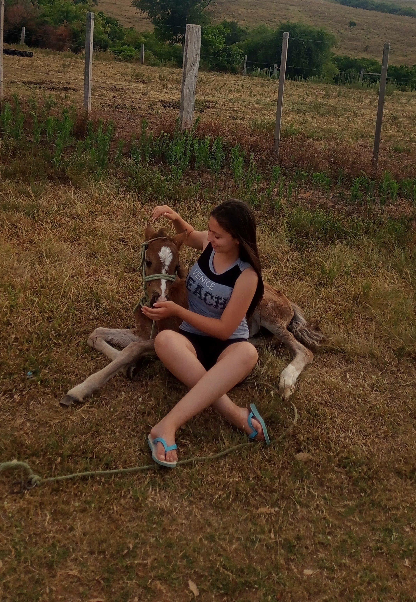
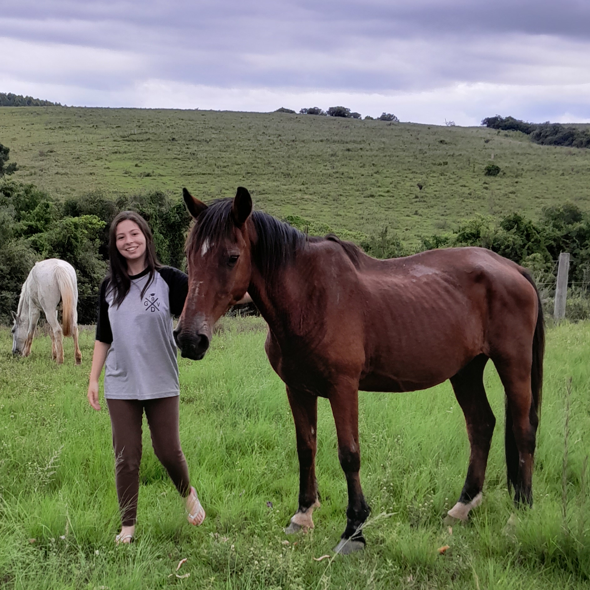
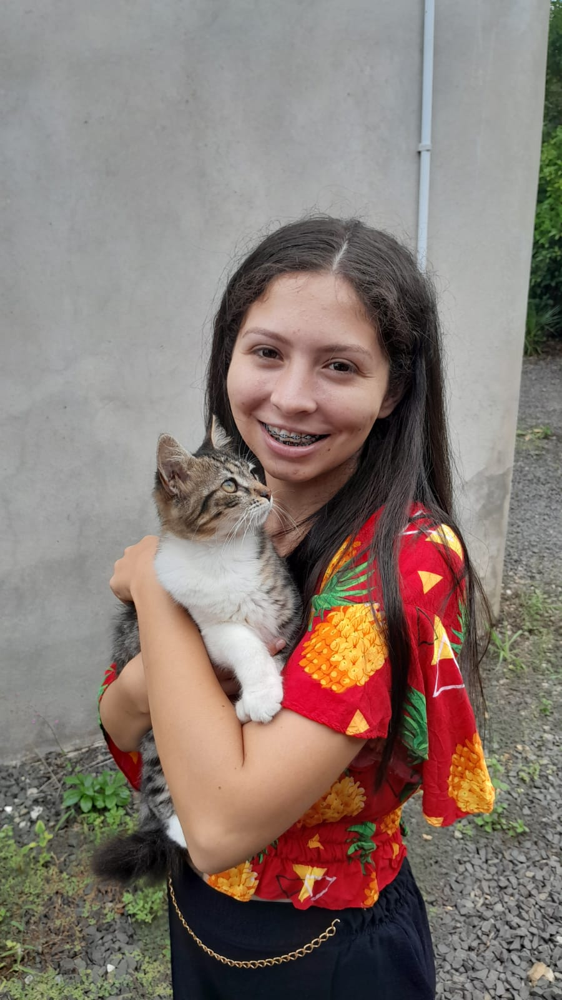
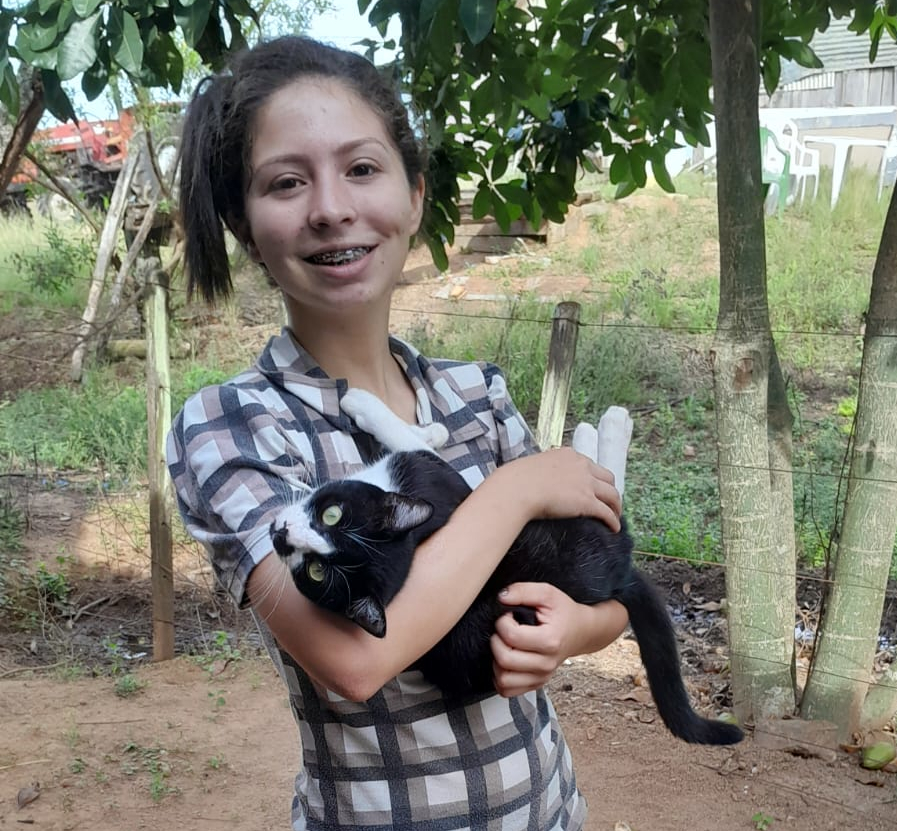

Sobre mim
Desenvolvedora Front-end júnior apaixonada por criar interfaces limpas e acessíveis. Estudante de ADS com foco em HTML, CSS e JavaScript Vanilla, caminhando para o ecossistema React.
Minha história




Me chamo Larissa, tenho 20 anos, sou de Minas do Leão/RS (93km de Porto Alegre/RS) e estou cursando Análise e Desenvolvimento de Sistemas na Ulbra, na modalidade EAD, estou no 3° semestre.
Me criei no interior de Rio Pardo, convivendo desde pequena com os animais e com a agricultura, meus pais moram no interior e eu vim para a cidade para estudar e trabalhar. Sou completamente apaixonada pela agricultura, pelos animais e tudo o que está relacionado com o meio ambiente.
Meu maior sonho e objetivo é poder morar no interior novamente, próximo de meus pais e do que vivi na infância, por isso, busco uma oportunidade home office.
Mas estou disponível para trabalhos presenciais e híbridos, pois sei que é importante para meu crescimento profissional.
Gostaria de ressaltar aqui também a minha paixão por tecnologia. Me apaixonei por tecnologia desde o primeiro contato, acho incrível como os sites são estruturados, como a internet funciona, o mundo tecnológico é muito fascinante.
Meu foco atualmente está direcionado para o ecossistema de desenvolvimento web, dedicando-me intensamente aos estudos de frontend (HTML, CSS e JavaScript), meu objetivo é consolidar bem a base e após me aprofundar em React.